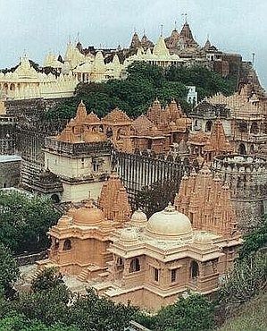
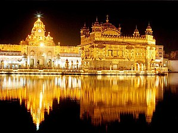

Over the centuries, there has been a significant fusion of cultures between Buddhists, Hindus, Muslims, Jains, Sikhs and various tribal populations in India.
India is the birthplace of Hinduism, Buddhism, Jainism, Sikhism, and other religions. They are collectively known as Indian religions.
hindu kandariya mahadeva temple
jain palitana temple

buddhist mahabodhi temple
sikh golden temple
Traditional clothing in India greatly varies across different parts of the country and is influenced by local culture, geography, climate, and rural/urban. Popular styles of dress include draped garments such as sari and mekhela sador for women and dhoti or lungi or panche for men. Stitched clothes are also popular such as churidar or salwar-kameez for women, with dupatta thrown over shoulder completing the outfit. The salwar is often loose fitting, while churidar is a tighter cut. The dastar, a headgear worn by Sikhs is common in Punjab.